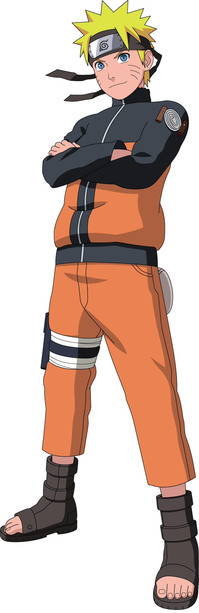
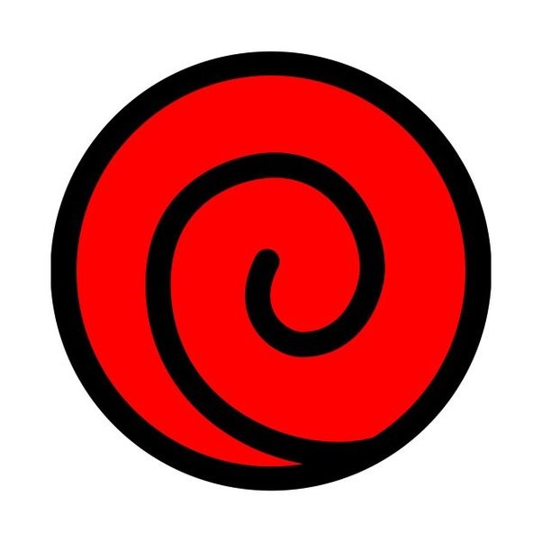
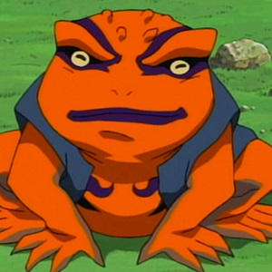
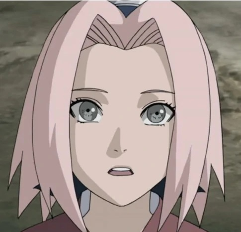
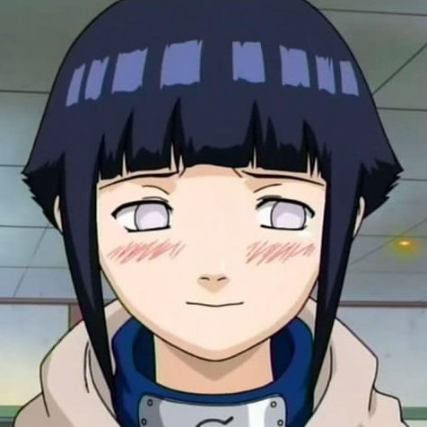

Special Skills or
Character Overview
Everyone's favorite “knuckle-headed ninja”, Naruto, bearer of the vicious Nine-Tailed Fox Spirit, is crude, loud, fiercely loyal, and determined to win the respect of his Shinobi village.
Family Symbol
Summoning Animal
Summoning toad Gamakichi
Special Skills or
Kekkei Genkai
Over time Naruto gradually gains control over the powers he inherits from the Nine-Tailed Fox Spirit imprisoned in his navel.
Friends
Rivals
Love Interests
- 
Sakura Haruno
The first girl to take Naruto's breath away. Unfortunately, she only had eyes for Sasuke. Gradually, his intense interest in her mellowed into a deep friendship.
- 
Hinata Hyuga
Hinata's respect and love was won early—though Naruto had no idea. His distraction with Sakura and Hinata's painful shyness kept this romance at bay until well into their teen years.
Naruto meets Sasuke